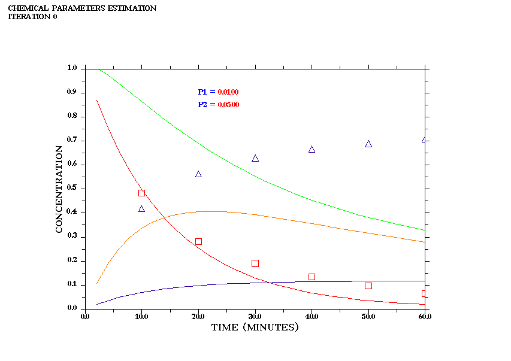
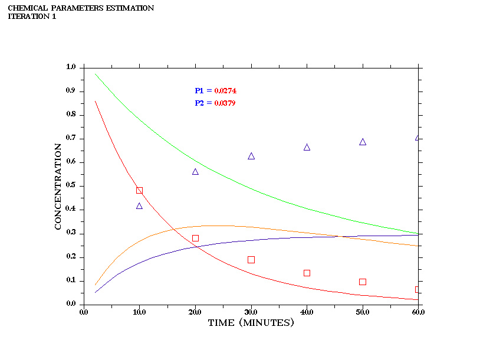
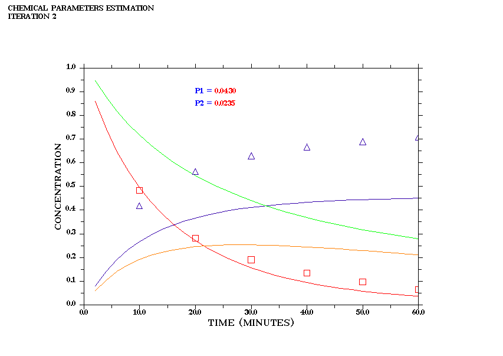
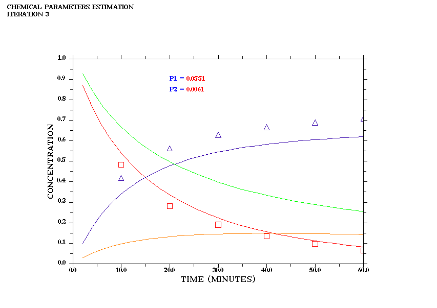
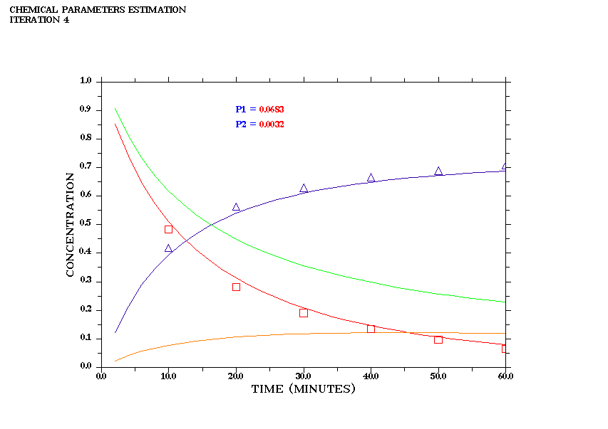
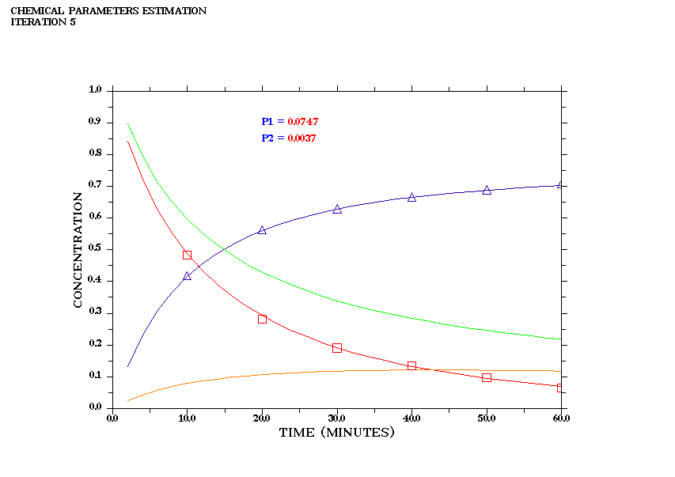
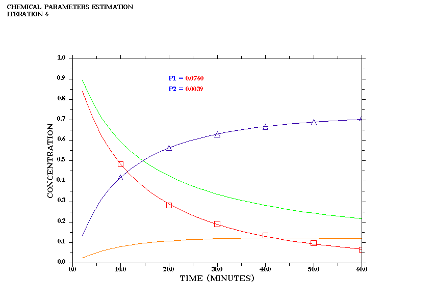
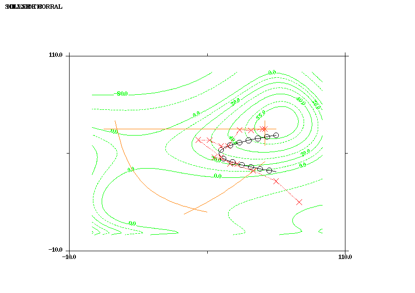
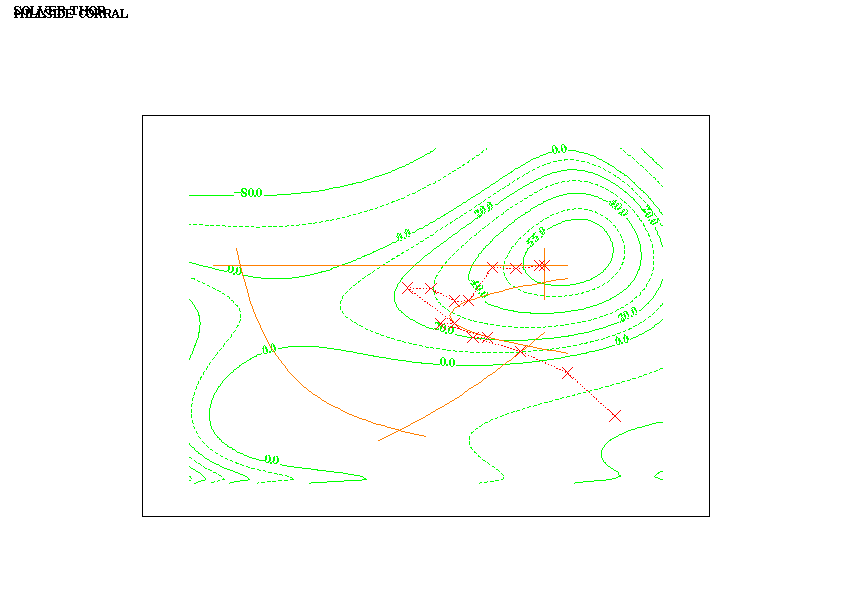

Figure 8-19 JOVE search path for lesser difficulty
The FORTRAN CALCULUS graphics subsystem is a set of utilities which produce graphs in a two stage process, synthesis and production.
Graph synthesis is the creation and storage of graph information in a data base. The collection of information making up a graph is called a graph object, and it is referenced by name. The synthesis process permits ordered information in several graphs to be assembled in a relatively random process concurrently, as it becomes available during computation. The resulting objects contain automatic programs for producing the graphs when they are retrieved by the production utilities. Graph production is the retrieval of graph objects followed by display on a monitor, printing on a graphics compatible printer, or plotting via a pen plotter.
The following utility command-calls are used for graph synthesis:
@GRAFILE - Open Graph FIle Object in Database
@HEAD - Heading message in pixel coordinates
@MESSAGE - Plot Message in pixel coordinates
@FONT - Font
definition and rendering
@AXLABS - Axis label definition
@AXNAME -
Axis name definition
@AXSET - Axis System Element
Suppression
@AXTICKS - Modifying axis ticks
@XYGRAF -
Definition of XY axes plot system [or is it XYPLOT CK]
@XAXIS - Defines alternate horizontal axis
@YAXIS - Defines alternate vertical axis
@GRID -
Overlays a Grid on an Axix System
@SETUP - Defines properties of a curve or point set
@CURVE - Enters connected points on a curve function
@SPLINE - Draws a cubic spline curve through the points of a function
@POINT - Enters discrete (unconnnected) points in a point set
[CK status]
@NUMBER - Plot floating point number or integer at user
coordinates
@NUMPIX - Plot floating point number or integer at pixel coordinates
@CONTDEF - Defines contour parameters for a set of contours
@MESH - Generates a mesh grid of a contour function
@CONTOUR - Generates contour curves for a group of contours
@POLAR
- Plot a polar graph
The following utility command-calls are used for graph production:
@MODES - Defines display modes for graphics & text
@SHOW - Displays a named graph on the graphics ... [FIX]
@DRAW - Writes the named graph on a printer file (name.GPR)
@PLOT - Plots a named graph on a pen plotter Graph Synthesis Command-Calls
[CK status]
@CLEAR - Deletes a graph object from the database
@YAXIS - Definition of y-axis
Syntax:
@YAXIS(name, yst, yin, ymajor, minor,label, ndec)
Symbols:
name : character string = name of the graph
yst : real*8 = value of y at the start of
the y-axis
yfin : real*8 = value of y at the end of the
y-axis
ymajor : real*8 = distance betrween major (large)
tic marks on the
minor : integer = flag for use of minor tic
marks (0,+1,-1)
label : integer = flag for auto-labeling of
tic marks (0,+1)
ndec : integer = number of decimal places for
auto-labeling (0,1,2,3)
This utility generates the y-axis element for the named graph. The
@WINDOW and/or @FRAME utilities must be called before @YAXIS is called.
The major tic marks along the y-axis will be palced at intervals of ymajor starting at yorg. If ymajor is positive/negative, then the tic marks will be placed to the right/left of the y-axis respectively. If ymajor is zero, then no tic marks are inserted.
If minor=0, then no minor tic marks are inserted. If minor=+1, then minor tic marks are inserted halfway betreen the major tic marks (but are not labeled). If minor=-1, then a logarithmic set of tic marks are inserted (for log plots).
If label=0, the there is no auto-labeling. If label=1, the major tic marks are automatically supplied a label. If label=-1, then the origin is labeled as well. The format of the label is F10.n with the decimal point lined up with the major tic mark. The label is on the opposite side of the y-axis from the tic marks. Here n=ndec=number of decimal points desired. Note: If the absolute value of y exceeds 99999.999 at the tic mark then the label becomes 99999.999, except when minor=-1 (log axis), then the tic mark labels run from 10.**yst ot 10.**yfin rather that from yst to yfin.
For a log axis, the values of yst and yfin should be one of the following: 0.001, 0.01, 1.0, 10.0, 100.0, 1000.0 or 10000.0 with yst less than yfin.
@AXLABS - Axis Label Definition
Syntax:
@AXLABS(name,axis,typ,ornt,pos,just,ndig,ldst,klr)
Symbols :
name : name of object and metafile (character string)
axis : axis or axes identifier (character string) (e.g 'XYZ')
typ : type of labels (character string)
'NONE' - suppress all labels
'FLOAT' - plot labels in floating point format
'EXP' - plot labels in exponential format where fractions range 1-10
'FEXP' - plot labels in fEn format where f range 1-10
'LOG' - plot logarithmic labels with base 10 and the corresponding exponents
'CLOG' - same as 'LOG' but label is centered below tick mark
'ELOG' - plot only the logarithmic values of labels
'TIME' - plot time labels in hhmm format
'HOURS' - plot time labels in hh format
'SECONDS' - plot time labels in hhmmss format
'DATE' - plot date labels
'MAP' - plot geographic labels as positive floating point numbers with 'W','E','N','S' suffixes
'LMAP' - similar to 'MAP' with lower case suffixes
'DMAP' - plots labels that are floating point numbers with degree symbols
'MYLAB' - plots labels defined with the routine MYLAB
ornt : orientation of labels (character string)
'HORI' - horizontal labels
'VERT' - vertical labels
pos : position of labels (character string)
'TICKS' - plot labels at major ticks
'CENTER' - plot labels centered between major ticks
'SHIFT' - shift starting and ending labels
just : justification of labels (character string)
'AUTO' - automatically justify labels
'LEFT' - left-justify labels
'RIGHT' - right-justify labels
'OUTW' - left-justify left and lower axis labels and right-justify right and upper axis labels
'INWA' - right-justify left and lower axis labels and left-justify right and upper axis labels
ndig : number of digits after decimal point in labels (integer)
-1 - integer labels
0 - integer with decimal point
n - number of digits after decimal point. The last digit will be rounded up
klr : color value of labels (integer) - see 8.3.3 Color Parameter
@AXNAME - Axis Name Definition
Syntax:
@AXNAME(name,axis,title,just,ndist,nhgt,klr)
Symbols:
name : name of object and metafile
axis : axis or axes identifier (character string) (e.g 'XYZ')
title : axis title (character string, 60 characters or less).
just : align ment of axis title (character string): 'CENT', 'LEFT', or 'RIGHT'
ndist : (integer) distance in pixel coordinates between axis title and labels
nhgt : (integer) character height in pixel coordinates for axis names
klr : color value of labels (integer) - see 8.3.3 Color Parameters
Syntax:
@AXSET(name,ax1,ay2,ax3,ay4)
Symbols:
name name of object and metafileax1 : render lower x axis (character string): 'NONE', 'LINE', 'TICKS', 'LABELS', or 'NAME'
ay2 : render left y axis (character string): 'NONE', 'LINE', 'TICKS', 'LABELS', or 'NAME'
ax3 : render upper x axis (character string): 'NONE', 'LINE', 'TICKS', 'LABELS', or 'NAME'
ay4 : render right y axis (character string): 'NONE', 'LINE', 'TICKS', 'LABELS', or 'NAME'
With 'NONE', complete axis will be suppressed; with 'LINE', only axis lines will be plotted; with 'TICKS', axis lines and ticks will be plotted; with 'LABELS', axis lines, ticks, and labels will be plotted; and with 'NAME', all elements will be displayed.
Syntax:
@AXSET(name,axis,pos,maj,min,ntk,klr)
Symbols:
name name of object and metafile
axis : axis or axes identifier (character string) (e.g 'XYZ')
pos : position of ticks (character string)
'LABELS' - plot ticks on the same size as labels
'CENTER' - center ticks on the axis line
'REVERS' - plot tick inside the axis system
maj : (integer) lengh of major ticks in pixel coordinates
min : (integer) lengh of minor ticks in pixel coordinates
ntk : (integer) number of ticks between axis labels
klr : color value of labels (integer) - see 8.3.3 Color Parameters
Symbols
name : name of object and metafile
id : (character*2) identifier of contour function
values : (real) array of numcon contour values
lbflgs : (integer) array of numcon contour flags (1 or 0) indicating whether a given contour should be labeled or unlabeled
kolors : (integer) array of numcon color values (see 3.8.3 Color Parameters)
lintyps : (integer) array of numcon line types (see 3.8.1 Line Type Parameters)
numcon : (integer) number of contour curves
This utility generates as series of contours each corresponding to
a fixed value of the contour function specified by ident. The
values array contains the numcon values to be assigned
to the contours. The lbflg array is a set of flags (1 or 0)
indicating whether a given contour should be labeled (1) or unlabeled
(0).
This utility is restricted to 10 contours per call. For more contours on a given function, successive calls can be made with a different values array and numcon. However, all labeled contours must be in the first call. In successive calls, the lbflg array should be set to zero. Also, idef must be set to 1 or 2 to avoid having the prior contours cleared during successive calls.
The idef parameter controls the use of default properties. If
idef=0, the default plot size, graphics mode, contour line
colors and legend are used. If idef=1, the plot size is set
by default and the line colors and legend are defined by @CONTDEF,
which must precede the call to @CONTOUR for the associated ident. If
idef=2, the line colors and legend are defined by the @CONTDEF,
but the plot window must be defined by a preceding call to @WINDOW. In
the latter cases (idef=1,2), graphics mode must be set by @MODES
before the graph is produced by @SHOW or @DRAW.
Syntax:
@NUMBER(name,val,ndig,xp,yp,nh,ndeg,klr)
Symbols:
name name of object and metafile
val : (real) number value
ndig : (integer) number of digits after decimal point
xp : (real) user x-coordinate of upper left corner
yp : (real) user y-coordinate of upper left corner
nh : (integer) character height in pixels
ndeg : (integer) angle in degrees (counter-clockwize)
klr : (integer) color parameter - see 8.3.3 Color Parameters
Note:
To continue character strings and numbers on the same line, the coordinates (999,999) should be sent to MESSAGE and NUMBER. The text or numbers will be plotted after the last plotted text character or number.
@SETUP - Properties of curves and point sets
Syntax:
@SETUP(name, ident,Ltype,
Kolor, Symbol, Ksym)
Symbols:
name : character*8 = name of graph
ident : character*2 = identifier of function
Ltype : integer = line type (see 8.3.1: Line Type Parameters)
Kolor : integer = color of curve (see 8.3.3 Color Parameters)
Symbol : integer = plot symbol for curve (see 8.3.2 Symbol Type
Parameters)
Ksym : integer = symbol frequency (1=every point, 2= every other
point, etc.)
This utility sets up the properties of graph functions to be generated
by the @CURVE, @POINT, or @SPLINE utilities. Each function in the graph must
have a unique 2-character identifier ident. Each function in the graph must have
a unique 2-character identifier ident.
If ndots=0 then a solid line is drawn. If ndots=1 then no line is drawn. For ndots greater than 1, dashed lines are drawn with the dashes having ndots pixels. The color of the solid or dashed line is specified by the kolor index.
If symbol=-1, then the default (cross) is drawn at the data
points generated by @CURVE or @POINT. If symbol=-2 then no
symbol is drawn. Otherwise the character with ASCII index symbol
is drawn. If a symbol is drawn, then its color is given by the klrsym
index.
Syntax:
@GRAFIL(name,type,page,width,height)
Symbols:
name : name of object and metafile (character string)
type : metafile type (character string)
'SUM' - PNG graph in Summary Report Stream
'DET' - PNG graph Detail Report Stream
page : predefined page size codes for print device (character string)
' ' - Not used (default)
'SC2Q' - 1/3 page size (scale factor = 0.5)
'SC3Q' - 1 /2 page size (scale factor = 0.75)
'SC5Q' - 5/6 page size (scale factor = 1.25)
'SC6Q' - full page size (scale factor = 1.5)
'PX2Q' - 1/3 page size (427x302 pixels)
'PX3Q' - 1 /2 page size (640x453 pixels)
'PX5Q' - 5/6 page size (1066x754 pixels)
'PX6Q' - full page size
(1280x905 pixels)
width : integer width of image in pixels
height : integer height in pixels
Action:
Creates object name in graphics database
Writes name.OBG metafile.
Syntax:
@GRID(name,nx,ny)
Symbols:
name name of object and metafile
nx : (integer) number of grid lines between labels on x-axis
ny : (integer) number of grid lines between labels on y-axis
Syntax:
@HEAD(name,heading,nx,ny,klr)
Symbols:
name : name of object and metafile
heading : message (character string)
nx : (integer) x-plot coordinate of upper left corner of heading message
ny : (integer) y-plot coordinate of upper left corner of heading message
klr : color value of message (integer) - see
8.3.3 Color Parameters
Syntax:
@MESSAGE(name,message,xm,ym,klr)
Symbols:
name name of object and metafile
message : message (character string)
xm : (real) user x-coordinate of upper left corner of message
xm : (real) user y-coordinate of upper left corner of message
klr : color value of message (integer) - see 8.3.3 Color Parameters
Note:
Syntax:
@POLAR(name,ncirc,nsect)
Symbols:
name name of object and metafile
ncirc : (integer) number of circles between labels
nsect : (integer) number of sectors between labels
Syntax:
@XAXIS(name, xst, xfin, xorg, xstep, length, label, it, nx, ny)
Symbols:
name name of object and metafile
xst : start value of x coordinate
xfin : final value of x coordinate
xorg : first label of x coordinate
xstep : step between labels
length : length of axis in pixel coordinates
label : character string containing axis name
it : integer indicating how ticks, labels, and axis name are plotted
it = 0 : clockwise direction
it = 1 : counter-clockwise direction
nx : integer X plot coordinate of axis starting point (plotted from left to right)
ny : integer Y plot coordinate of axis starting point
Syntax:
@XYPLOT(name,axty,xmin,xmax,xorg,xstep,ymin,ymax,yorg,ystep,sfac,linlogx,linlogy,nxticks,nyticks)
Symbols:
name name of object and metafile (character string)
axty : axes type (character string)
'RECT' - rectangular box of dual axes (origin in lower left corner)
'CROSS' - single crossed axes (origin in center)
xmin : lower limit of x-axis (real)
xmax : upper limit of x-axis (real)
xorg : first x-axis label value (real)
xstep : x-step between labels (real)
ymin : lower limit of y-axis (real)
ymax : upper limit of y-axis (real)
yorg : first y-axis label value (real)
ystep : y-step between labels (real)
sfac : scale facter (not used at present (replaced in GRAFIL)
Syntax:
@YAXIS(name, yst, yfin, yorg, ystep, length, label, it, nx, ny)
Symbols:
name : name of object and metafile
yst : start value of y coordinate
yfin : final value of y coordinate
yorg : first label of y coordinate
ystep : step between labels
length : length of axis in pixel coordinates
label : character string containing axis name
it : integer indicating how ticks, labels, and axis name are plotted
it = 0 : clockwise direction
it = 1 : counter-clockwise direction
nx : integer X plot coordinate of axis starting point (plotted from bottom to top)
ny : integer Y plot coordinate of axis starting point
This utility produces a graph image from the named graph object.
In view of the economy of problem expression provided by calculus-level
macro statements, graphics commands for those programs employing graphics
tend to dominate problem coding. Moreover, since this chapter on graphics
follows all of the chapters dealing with the calculus operations,
it is convenient to present applications problems here that utilize
combinations of features, including graphics. In the following discussions,
these applications are presented in their entirety and topically discussed
with emphasis on usage of the graphics operations, but with also some
discussion regarding the calculus operations used in the applications.
Applications Problem 8-1: Admittance Circuit Fit
This application was introduced as illustration problem 3 in Section 2.1, which gives a circuit diagram and a discussion of the model. The graphics-enhanced version of this program is given below.
In the problem procedure, two command-calls to the procedures AXES and FINISH serve to setup graph synthesis for the program and to produce the final graph image respectively.
[problem circuit][procedure axis]
AXES Procedure - This procedure creates the graph object with the command @GRAPH. It establishes the absolute character size at 0.2 inches for printing on a 300 DPI laser printer, and defines a 5 inch by 4 inch frame in the lower-left corner of the printer's raster (in order to make the graphics capture file small enough to easily import into Ventura publisher). The plotting window of the graph is then generated via the @WINDOW command. This establishes the scaling for the subsequent functions to be plotted.
The subsequent @SETUP commands create the identity of the three functions
to be plotted:
These identifiers are later used as sort keys to sort the data entered into the graph object via @POINT and @CURVE commands, so that the separate functions are accumulated individually even though the functions are generated concurrently.
The subsequent commands @XAXIS, @YAXIS, @XELABEL, and @YELABEL establish and label the two coordinate axes.
Next, the two initially known functions (data points and the admittance function based upon guessed parameters) are generated and entered into the database.
Finally, labels are placed in the graph in proximity to the functions they describe.
FINISH procedure - The FINISH procedure is used to generate the 'YC' (converged) version of the admittance function in the graph to show goodness of fit. The DO loop computes the YC function and uses @CURVE enter it into the graph object of the database.
Graph Production - Up to this point all graphics operations
have been part of the synthesis phase which accumulates the graph
object in the database. The production of a graphical image from
this object is accomplished via the @SHOW command (for screen display)
or the @DRAW command (for print file generation). However, the particular
form of graphics production is also governed by the GRAPHICS metacommand
which precedes the PROBLEM statement. When this command is present,
it overrides the type of the production command, causing output to
be routed to the "SCREEN", "FILE", or "BOTH". In this application,
the graph image was routed to "BOTH" screen and print file. The resulting
screen and print images are shown in Figures 8-1 and 8-2.
[FIG 8-1] [fig 8-2]
Application Problem 8-2: Pilot Ejection Profile
This problem has been used for many years as an example to demonstrate
continuous simulation languages using a trial & error trajectory simulation
to characterize safe ejection in a piecemeal fashion. This version
is somewhat different, in that the whole problem of profiling the
regime of safe ejection is completed in one run using implicit equations
solver AJAX to solve a series of two-point boundary value problems.
GLOBAL ALL
! &DEBUG pull
PROBLEM EJECT ! PILOT EJECTION PROFILE
!----------------------------------------------------------------|
! Traditional trial-and-error simulation model from 1970 CSSL |
! Specification. Solved as a repeated two-point boundary-value |
! problem to produce an altitude-velocity safe-ejection profile |
! in closed form using Fortran Calculus. It employs integration |
! solver ISIS nested within Newton solver AJAX, with trajectory |
! iterations displayed via web graphics. |
!----------------------------------------------------------------|
DIMENSION ALT(6),VEL(6)
CHARACTER FCSINT*2,PLANE*7,TOCENTRY*50,TOCLABEL*50
DATA ALT/0,10000,20000,30000,40000,50000/ ! Altitude table
SMASS=7: G=32.2: CD=1: VE=40: THETAD=15: TIME=1.0
S=10: Y1=4: VA=100
DO 10 I=1,6
H=ALT(I) : IT=0 : PLANE='PLANE'//FCSINT(I)
@AXES(PLANE,'PILOT EJECTION')
IF(H.LE.35332) THEN ! Atmospheric density model
RHO=0.002378*(1-.689E-5*H)**4.256
ELSE
RHO=0.00315/EXP(1.452+(H-35332)/20950)
ENDIF
!----------------- MetaCalculus Statement ------------------
FIND VA,TIME; IN SEAT(PLANE); BY AJAX(ACON); TO MATCH GX,GY
!-----------------------------------------------------------
TOCENTRY=TOCLABEL('TRAJECTORY ITERATIONS AT ALTITUDE=',H)
@DISPLAY(PLANE,TOCENTRY)
VEL(I)=VA
10 CONTINUE
@SAFE('PROFILE')
END
! &NODEBUG pull
CONTROLLER ACON(AJAX) ! FIND control parameters for Ajax solver
DAMP=0 ! Suppress damping in damped Newton method
SUMOUT=1 ! Send iteration summary report to SUMMARY stream
DETAIL=1 ! Create iteration detail report for each iteration
DETOUT=-1 ! Send iteration report to DETAIL stream
END
!------------- Simulation Model of Seat Trajectory -------------|
MODEL SEAT(AIRPLANE)
CHARACTER*2 FCSINT,NI,AIRPLANE*7
VX=SQRT(VA**2)-VE*SIND(THETAD) : VY=VE*COSD(THETAD)
V=SQRT(VX*VX+VY*VY) : THETA=ATAN(VY/VX)
X=0 : Y=Y1 : T=0 : DT=ABS(TIME)/20 : DP=4*DT : TP=T+DP
IT=IT+1 : NI=FCSINT(IT)
IF(IT.GT.9) THEN
@POINT(AIRPLANE,'I'//NI,X,Y)
ELSE
@CURVE(AIRPLANE,'I'//NI,X,Y)
ENDIF
!------------------ MetaCalculus Statement ------------------
INITIATE ISIS; FOR MOTION; EQUATIONS
& THEDOT/THETA, VDOT/V, XDOT/X, YDOT/Y; OF T; STEP DT; TO TP
!------------------------------------------------------------
DO WHILE (T.LT.TIME)
!--MetaCalculus Statemant--
INTEGRATE MOTION; BY ISIS
!--------------------------
@CURVE(AIRPLANE,'I'//NI,X,Y)
TP=TP+DP
END DO
GX=-X-30 ! Trajectory target boundary condition on X at T=TIME
GY=Y-20 ! Y at T=TIME
TERMINATE MOTION
END
MODEL MOTION ! Differential Equations
D=0.5*RHO*CD*S*V*V
THEDOT=-G*COS(THETA)/V ! Equation for THETA(T)
VDOT=-D/SMASS-G*SIN(THETA) ! Equation for V(T)
XDOT=V*COS(THETA)-ABS(VA) ! Equation for X(T)
YDOT=V*SIN(THETA) ! Equation for Y(T)
END
!===================== GRAPHICS DISPLAY ROUTINES ======================|
PROCEDURE AXES(NAME,TITLE)
!----------------------------------------------------------------|
! This procedure sets up a profile picture of a jet plane with |
! superimposed axes to illustrate the iterated seat trajectories |
! of the two-point boundary-value problem graphically. |
!----------------------------------------------------------------|
CHARACTER*(*) NAME,LABEL,TITLE
DIMENSION P1(2,6),P2(2,11),TG(2,9)
!---------- Image data for graph profile of plane -----------
DATA P1/8.7,0,8.9,.5,7.75,1.5,5,2.2,2.2,3.8,1.8,2.8/
DATA P2/5,2.2,1.8,2.8,.25,3.1,-0.1,4.0,-21,3.75,-25,3.9,
& -26.3,4.75,-29.2,11,-30,12,-32.2,12,-30.3,0/
DATA TG/-30.6,19.4,-30,19.15,-29.4,19.4,-30.6,20.6,-30,20.85,
& -29.4,20.6,-30.6,19.4,-30.85,20,-30.6,20.6/
!------------------------------------------------------------
@GRAFIL(NAME,'SUM','IMAGE',0,0) ! Create SUMMARY-stream graph
@FONT('COMPLEX','STANDARD',0,0) ! Use default char size & color
@XYPLOT(NAME,'RECT'-30,0,-30,10,0,30,0,10,1.0,0,0,0,0)
@AXSET(NAME,'LABELS','NONE','NONE','LABELS')
@SETUP(NAME,'I1',2,4,0,1) ! 1st Iteration (Blue dashed)
@SETUP(NAME,'I2',2,3,0,1) ! 2nd Iteration (Green dashed)
@SETUP(NAME,'I3',2,5,0,1) ! 3rd Iteration (Cyan dashed)
@SETUP(NAME,'I4',2,1,0,1) ! 4th Iteration (Red dashed)
@SETUP(NAME,'I5',2,8,0,1) ! 5th Iteration (Magenta dashed)
@SETUP(NAME,'I6',2,7,0,1) ! 6th Iteration (Orange dashed)
@SETUP(NAME,'I7',2,9,0,1) ! 7th Iteration (White dashed)
@SETUP(NAME,'I8',2,6,0,1) ! 8th Iteration (yellow dashed)
@SETUP(NAME,'I9',2,3,0,1) ! 9th Iteration (Green dashed)
@SETUP(NAME,'P1',0,4,0,1) ! Plane Outline 1 (Blue solid)
@SETUP(NAME,'P2',0,4,0,1) ! Plane Outline 2 (Blue solid)
@SETUP(NAME,'TG',2,6,0,1) ! Target (Yellow dashed)
@HEAD(NAME,TITLE,50,50,1) ! Chart title (Black)
@MESSAGE(NAME,'ALTITUDE',-20.0,30.0,1) ! (Black)
@NUMBER(NAME,-12.0,30.0,H,4) ! (Blue)
DO 10 J=1,6
@CURVE(NAME,'P1',P1(1,J),P1(2,J))
10 CONTINUE
DO 20 J=1,11
@CURVE(NAME,'P2',P2(1,J),P2(2,J))
20 CONTINUE
DO 30 J=1,9
@CURVE(NAME,'TG',TG(1,J),TG(2,J))
30 CONTINUE
RETURN
C
ENTRY DISPLAY(NAME,LABEL)
@MESSAGE(NAME,5,'SPEED',-20.0,28.0,0)
@NUMBER(NAME,-12.0,28.0,VA,2) ! (Red)
@SHOW(NAME,LABEL)
END
PROCEDURE SAFE(GNAME)
!----------------------------------------------------------------|
! This procedure sets up the graph of the altitude-velolcity |
! safe ejection profile for the seat-ejection apparatus, which |
! constitutes the desired closed-form solution of the design |
! problem. This would be contrasted with a trial and error |
! scatter diagram, which would be the result of multiple |
! simulation runs with an ordinary simulation language like CSSL.|
!----------------------------------------------------------------|
CHARACTER*(*) GNAME
@GRAFIL(GNAME,'SUM','IMAGE',0,0) ! Create SUMMARY-stream graph
@FONT('COMPLEX','STANDARD',0,0) ! Default character size & color
@XYPLOT(GNAME,200,800,200,200,0,50000,0,10000,1.0,0.0)
@AXNAME(GNAME,'X','SPEED','RIGHT',16,12,2)
@AXLABS(GNAME,'X','HORI','TICKS','AUTO',1,16,1)
@AXNAME(GNAME,'Y','ALTITUDE','LEFT',16,12,2)
@AXLABS(GNAME,'Y','HORI','TICKS','AUTO',-1,1,16,1)
@SETUP(GNAME,'PP',6,3,3,1) ! Profile Points (green deltas)
@SETUP(GNAME,'CR',5,5,0,1) ! Profile Curve (cyan dashed)
@HEAD(GNAME,'SAFE EJECTION PROFILE',50,50,1) ! Title (black)
DO 10 J=1,6
@POINT(GNAME,'PP',VEL(J),ALT(J))
@CURVE(GNAME,'CR',VEL(J),ALT(J))
10 CONTINUE
@DRAW(GNAME,'ALTITUDE-VELOCITY PROFILE GRAPH') ! no border
END
CHARACTER*(*) FUNCTION TOCLABEL(STRING,VALUE)
!----------------------------------------------------------------|
! This function formats a SUMMARY-stream Table of Contents Entry.|
!----------------------------------------------------------------|
CHARACTER*(*) STRING
WRITE(TOCLABEL,10),VALUE
10 FORMAT(A,'=',F6.0)
END
Problem EJECT - In this program, altitude is used as a parameter and the loop (DO 10) is used to solve the problem six times for altitudes ranging from 0 to 50,000 feet. The first line of this loop contains three statements which assign the altitude to H, zero the iteration counter IT, and compute the character variable PLANE used to name a distinct graph object for each cycle of the loop. Each graph object is setup via the command-call to AXES which also plots an image of the aircraft profile with the ejection coordinate system.
Safe ejection is defined, somewhat simplistically, by a target in space 8 feet above the rudder of the aircraft. If a trajectory passes through this point with minimum time from ejection, then this defines the maximum aircraft speed for safe ejection. Any higher speed will result in a trajectory which passes under this point. Consequently, the profile of safe ejection can be determined exactly for this model, by solving a two point boundary-value problem for each altitude, computing the aircraft speed VA and the elapsed time from ejection TIME to match the boundary conditions on X and Y defining the target point above the rudder. This problem is posed by the FIND statement which iteratively shoots trajectories using Newton's method to converge on VA and TIME to match the target constraints GX and GY.
The subsequent command-call to DISPLAY (an entry point in AXES) labels the aircraft speed in the graph, and produces the graph for the particular cycle of the loop. This is followed by accumulation of the computed maximum speed in the array VEL to be used to generate the profile curve after exiting the loop by the command-call to the SAFE procedure.
Model SEAT - This model controls the trajectory simulation for the pilot seat. It first computes the initial conditions of the trajectory from the aircraft speed parameterVA and relates the integration step size DT to one twentieth of the unknown duration TIME of the trajectory, then uses @POINT or @CURVE to plot the initial point on the trajectory identified by 'I' concatenated with the character conversion of the iteration number.
The INITIATE statement sets up the integration of the four simultaneous differential equations, contained in model MOTION, defining TP as the time when the trajectory will be interrupted for plotting. The subsequent DO WHILE loop causes integration to be carried out and plotting of the trajectory points via @CURVE.
Following the loop, the trajectory iteration is complete, and the constraints GX and GY are computed. This is followed by the TERMINATE statement which returns the internal integration arrays to free storage.
Because this program unit is a model, its assignment statements are overloaded for differentiation and partial derivatives of every real variable computed will be generated with respect to the variables VA and TIME. Of course this also includes the model MOTION, and the integation solver ISIS. This enables differentiation to be propagated though the trajectory, so that the gradients of GX and GY, representing the boundary conditions, are computed with respect to the iterative unknowns VA and TIME.
Procedure AXES - This procedure contains most of the graphics operations necessary to synthesize the six profile graphs given in figures 8-3 to 8-8. AXES creates the graph object with the command @GRAPH. It establishes the absolute character size at 0.2 inches for printing on a 300 DPI laser printer, and defines a 5 inch by 4 inch frame in the lower-left corner of the printer's raster. The plotting window of the graph is then generated via the @WINDOW command. This establishes the scaling for the subsequent functions to be plotted.
The @SETUP group creates curves in the database corresponding to each trajectory iteration and also the curves 'P1', 'P2', and 'TG' of the aircraft and target which are generated by the subsequent loops.
Procedure SAFE - This procedure synthesizes and produces the SAFE EJECTION PROFILE curve which is the final result of the program. This curve is give in Figure 8-9. All point above and left of the curve are considered safe.
FIG 8-3, 8-4, 8-5, ... 8-9 eject profiles
Application Problem 8-3: Chemical Parameters Estimation
This program is a variation of Application Problem 6-2 to illustrate iterative trajectory optimization fitting via graphics. It produces a graphics illustration of each trajectory simulation corresponding to each iteration of the optimization problem.
The graphics additions are introduced in model CURFIT with the AXES command-call which sets up graphics objects for each iteration. The integrated trajectories of the four chemical concentrations are plotted via the CURVES command-call. The measured points of concentrations A and C are plotted via the MEASURED command call. Finally, the iteration graph is produced via the @SHOW command.
GLOBAL ALL !germano 1/16
PROBLEM CHEMPARE ! Chemical Kinetics Parameter Estimation
DIMENSION TM(6),CM(6),AM(6)
DATA TM/10,20,30,40,50,60/ ! Time points for measurements
DATA CM/0.419,0.563,0.629,0.666,0.689,0.708/ ! C measurements
DATA AM/0.483,0.281,0.191,0.134,0.097,0.065/ ! A measurements
DATA NM,A0,B0,C0,D0,DT/6,1.0,1.03,0.0,0.0,2.0/ ! Initial Cond.
DATA B1,B2/0.015,0.015/ ! Optimization step bounds
P1=0.01 : P2=0.05 ! Parameter starting guesses
INITIATE ATHENA; FOR REACTION;
& EQUATIONS DADT/A,DBDT/B,DCDT/C,DDDT/D;
& OF T; STEP DT; TO TF
FIND P1,P2; IN CURFIT;
& BY HERA(SET); WITH BOUNDS B1,B2; TO MINIMIZE ERROR
END
MODEL CURFIT
CHARFUN FCSINT*2
CHARACTER*2 NI
DATA IT/0/ : NI=FCSINT(IT)
@AXES('ITER'//NI,'ITERATION '//NI)
A=A0 : B=B0 : C=C0 : D=D0 : T=0 : TF=0
ERROR=0 : I=1
DO WHILE (I.LE.NM)
TF=TF+DT
INTEGRATE REACTION; BY ATHENA
@CURVES('ITER'//NI)
IF(TF.EQ.TM(I)) THEN
ERROR=ERROR+(AM(I)-A)**2+(CM(I)-C)**2 ! Cumulative error
@MEASURED('ITER'//NI,AM(I),CM(I),TM(I)) ! Plot measurement
I=I+1
ENDIF
END DO
@SHOW('ITER'//NI,0) ! Show graph for this iteration
IT=IT+1
END
MODEL REACTION ! Rates of reaction differential equations
DCDT=P1*A*B
DADT=-(DCDT+(.01+P2)*A
DBDT=-(DCDT+.05*B*D)
DDDT=DBDT-DADT
END
CONTROLLER SET(HERA)
DELTA=1E-2
DETAIL=1
ADJUST=2
END
PROCEDURE AXES(GNAME,TITLE)
CHARACTER*(*) GNAME,TITLE
@GRAFIL(GNAME,'PNG','IMAGE',0,0) ! Generate PNG image file of default size
@FONT(GNAME,'COMPLEX','STANDARD',0,10) ! Use default character size and color
@AXNAME(GNAME,'X','TIME (MINUTES)','CENT',30,36,10)
@AXNAME(GNAME,'Y','CONCENTRATION','CENT',30,36,10)
@XYPLOT(GNAME,'RECT',0.0,60.0,0.0,10.0,0,1.0,0.0,0.1,1.0,0,0,0,0)
@SETUP(GNAME,'AM',0,2,1,-1) ! A Measured (Red boxes)
@SETUP(GNAME,'CM',0,8,3,-1) ! C Measured (Mga deltas)
@SETUP(GNAME,'A ',0,2,0,1) ! A Curve (Red)
@SETUP(GNAME,'C ',2,8,0,1) ! C Curve (Magenta)
@SETUP(GNAME,'B ',3,3,0,1) ! B Curve (Green)
@SETUP(GNAME,'D ',4,7,0,1) ! D Curve (Orange)
@HEAD(GNAME,'CHEMICAL PARAMETERS ESTIMATION',50,50,10) ! Chart Title (FORE)
@HEAD(GNAME,TITLE,50,100,10)
@MESSAGE(GNAME,'P1= ',20.0,.9,4) ! (Blue)
@NUMBER(GNAME,P1,4,999.,999.,10,0,2) ! (Red)
@MESSAGE(GNAME,'P2= ',20.0,.85,4) ! (Blue)
@NUMBER(GNAME,P2,4,999.,999.,10,0,2) ! (Red)
END
MODEL CURVES(GNAME) ! Generate points on integral curves
CHARACTER*(*) GNAME
@CURVE(GNAME,'A ',T,A)
@CURVE(GNAME,'C ',T,C)
@CURVE(GNAME,'B ',T,B)
@CURVE(GNAME,'D ',T,D)
END
MODEL MEASURED(GNAME,AP,CP,TP) ! Generate measured points
CHARACTER*(*) GNAME
@POINT(GNAME,'AM',TP,AP)
@POINT(GNAME,'CM',TP,CP)
END
The graphical results of the iterations are shown in Figures 8-10 to 8-16, depicting the sequential approximation process of optimization. The trajectories of the chemical concentrations, predicted by the differential equations, are the smooth curves. On a color monitor screen, these would appear in the labeled colors. However, in the black & white laser printer image, specific dashed patterns are assigned to each color.
The measured data values of A and C are also color coded to indicate correspondence between the curves and the data. As the iterations proceed, these curves successively approach coincidence with the data values until convergence in iteration six (Figure 8-16) when they are matched in a least-squares sense.
This problem demonstrates the power of optimization for phenomenological curve fitting (process identification). Because of the coupling of the differential equations, this provides the means of "measuring the unmeasurable" as exemplified by the remaining curves B and D for which no data existed. Moreover, the whole process is an indirect way of "measuring" the parameters P1 and P2 that could conceivably be programmed into the instrument that acquires the measurement samples.

Figure 8-11 Chemical parameters initial guess iteration

Figure 8-12 First optimization iteration

Figure 8-12 Second optimization iteration

Figure 8-13 Third optimization iteration

Figure 8-14 Fourth optimization iteration

Figure 8-15 Fifth optimization iteration

Figure 8-16. Sixth (Converged) optimization iteration
The following applications illustrate the synthesis and production
of contour graphs. This type of graph is a two-dimensional representation
of a three-dimensional function by using contour curves to show the
intersection of different level planes with the function's surface,
thereby depicting the three-dimensional shape of the function.
Application 8-4: Constrained Optimization Solver Comparison
In this application, a two dimensional function is optimized subject
to a set of inequality constraints in order to demonstrate the different
search patterns of constrained optimization solvers using the same
initial starting point. The objective function resembles a rolling
hillside with a nearby saddle point. A set of constraint functions
are superimposed upon it to enclose a feasible region resembling and
oddly shaped corral containing the saddle point, with a parabolic
fence guarding a narrow slope up the hillside toward the highest point
on the northeast corner. The output of eight variations of this program
are illustrated in Figures 8-17 to 8-25, showing the different search
patterns of the constrained optimizers THOR, ZEUS, JOVE, and JUPITER,
in two different levels of difficulty. The initial variation of the
program is given below.
PROBLEM HB1TG(10000,2000,2000)
COMMON/PRIN/X,Y,G(5),F
@CONGRAF ! Generate Contour & Constraint Graph
X=90 : Y=20 : BX=5 : BY=10
FIND X,Y; IN HB; BY THOR(SET); WITH BOUNDS BX,BY;
* HOLDING G; TO MAXIMIZE F
@SHOW('HBF',0) ! Display Graph
END
CONTROLLER SET(THOR)
CONVERGE=2
DETAIL=1
END
MODEL HB
COMMON/PRIN/X,Y,G(5),F
G(1)=X*Y-700 : G(2)=75-X : G(3)=65-Y :
G(4)=Y-X*X/125 : G(5)=(Y-50)**2-5*X+275
F1 = 75.1963666677 - 3.8112755343*X + 0.1269366345*X*X
* - 0.0020567665*X**3
F2 = 1.0345E-5*X**4 - 6.8306567613*Y + 0.0302344793*X*Y
* - 0.0012813448*X*X*Y
F3 = 3.52559E-5*X**3*Y - 2.266E-7*X**4*Y + 0.2564581253*Y*Y
* - 3.460403E-3*Y**3
F4 = 1.35139E-5*Y**4 - 28.1064434908/(Y+1)
* - 5.2375E-6*X*X*Y*Y
F5 = -6.3E-9*X**3*Y*Y + 7E-10*X**3*Y**3 + 3.405462E-4*X*Y*Y
F6 = -1.6638E-6*X*Y**3 - 2.8673112392*EXP(5E-4*X*Y)
F=F1+F2+F3+F4+F5+F6
@CURVE('HBF','SR',X,Y) ! Plot point on search trace
END
SUBROUTINE CONGRAF
IMPLICIT REAL*8 (A-H,O-Z)
DIMENSION CONS(9),LABL(9),LTYP(9),KLR(9)
DATA X1,X2,Y1,Y2/-10,110,-10,110/
DATA XA,XB,YA,YB/0,100,0,100/
DATA CONS/-80,-40,0,10,20,30,40,50,55/
DATA LABL/1,0,1,0,1,0,1,0,1/
DATA LTYP/0,2,0,2,0,2,0,2,0/
DATA KLR /3,3,3,3,3,3,3,3,3/
EXTERNAL HBCON
N=101 : XO=X1 : YO=Y1
@GRAFIL('HBF','PNG','IMAGE',0,0) ! Generate PNG image file of default size
@FONT('HBF','COMPLEX','STANDARD',0,0) ! Use default character size and color
@AXSET('HBF','NONE','NONE','NONE','NONE') ! Suppress axis plotting
@XYPLOT('HBF','RECT',X1,X2,X1,X2-X1,Y1,Y2,Y1,Y2-Y1,1.0,0,0,0,0)
@MESH('HBF','CS',XA,XB,YA,YB,N,N,HBCON)
@CONTOUR('HBF','CS',CONS,LABL,KLR,LTYP,9)
@HEAD('HBF','HILLSIDE CORRAL',50,40,10)
@HEAD('HBF','SOLVER THOR',50,100,10)
@SETUP('HBF','G1',2,7,0,1) ! (orange dashed)
DO 10 I=10,50
X=I : Y=700/X
@CURVE('HBF','G1',X,Y)
10 CONTINUE
@SETUP('HBF','G2',2,7,0,1) ! (orange dashed)
@CURVE('HBF','G2',75,70)
@CURVE('HBF','G2',75,55)
@SETUP('HBF','G3',2,7,0,1) ! (orange dashed)
@CURVE('HBF','G3',5,65)
@CURVE('HBF','G3',80,65)
@SETUP('HBF','G4',2,7,0,1) ! (orange dashed)
DO 20 I=40,75
X=I : Y=X*X/125
@CURVE('HBF','G4',X,Y)
20 CONTINUE
@SETUP('HBF','G5',2,7,0,1) ! (orange dashed)
DO 30 I=80,55,-1
X=I : Y=SQRT(5*X-275)+50
@CURVE('HBF','G5',X,Y)
30 CONTINUE
DO 40 I=55,80
X=I : Y=-SQRT(5*X-275)+50
@CURVE('HBF','G5',X,Y)
40 CONTINUE
@SETUP('HBF','SR',1,4,-5,1) ! (blue dotted with cross points)
END
FUNCTION HBCON(X,Y)
F1 = 75.1963666677 - 3.8112755343*X + 0.1269366345*X*X
* - 0.0020567665*X**3
F2 = 1.0345E-5*X**4 - 6.8306567613*Y + 0.0302344793*X*Y
* - 0.0012813448*X*X*Y
F3 = 3.52559E-5*X**3*Y - 2.266E-7*X**4*Y + 0.2564581253*Y*Y
* - 3.460403E-3*Y**3
F4 = 1.35139E-5*Y**4 - 28.1064434908/(Y+1)
* - 5.2375E-6*X*X*Y*Y
F5 = -6.3E-9*X**3*Y*Y + 7E-10*X**3*Y**3 + 3.405462E-4*X*Y*Y
F6 = -1.6638E-6*X*Y**3 - 2.8673112392*EXP(5E-4*X*Y)
HBCON=F1+F2+F3+F4+F5+F6
END
In the next three variations of this program, the FIND statements
were changed in the following sequence:
FIND X,Y; IN HB; BY ZEUS; HOLDING G; TO MAXIMIZE F
FIND X,Y; IN HB; BY JOVE; HOLDING G; TO MAXIMIZE F
FIND X,Y; IN HB; BY JUPITER; HOLDING G; TO MAXIMIZE F
The final four variations of the program added the following constraint
G(6) = X-54
as a north-south fence leaving a narrow gap in the feasible region
for the solvers to deal with.
In the PROBLEM procedure, the command-call to procedure CONGRAF serves to setup graph synthesis, and the final command @SHOW serves to produce the graph image from the accumulated graph object.
Procedure CONGRAF - The steps required to setup contour graph synthesis are as follows:
Note that HBCON is formally the same as the model HB. However, HB cannot be used because it is not programmed as a function, and computes REAL*8 values. HBCON must be a REAL*4 function for compatibility with the graphics library.
Search Path Plotting - The actual search path of the optimizer is plotted via the @CURVE command appearing at the end of model HB.
Optimizer Comparison Results-The graphical comparisons of the paths of the optimizers for the simpler problem are shown in Figures 8-17 to 8-20. All solvers were equally capable of solving this version of the problem. Note the conservative stepping of THOR, an LP-based method, and ZEUS, A first-order sequential unconstrained minimization (SUM), as compared to the more robust solvers JOVE and JUPITER.
In the more difficult version of the problem, having the narrow gap
(Figures 8-21 to 8-25), THOR converged prematurely at the entrance
to the gap, whereas the other three solvers had no difficulty finding
the same maximum as before.

Figure 8-17 THOR search path for lesser difficulty

Figure 8-18 ZEUS search path for lesser difficulty [fix]
[RERUN, get rest of figures]
Figure 8-19 JOVE search path for lesser difficulty
Figure 8-20 JUPITER search path for lesser difficulty
Figure 8-21 THOR search path for greater difficulty
Figure 8-22 ZEUS search path for greater difficulty
Figure 8-23 JOVE search path for greater difficulty
Figure 8-24 JUPITER search path for greater difficulty
This application is a study of the use of the unconstrained optimization solver HERA with a function having multiple extrema. It is a further illustration of the use of contour graphics to gain insight into how solvers behave. The particular function under study has a single maximum, four minima, and four saddle points in the region of the origin. Since HERA applies a second-order Newton method that can discriminate the type of extrema, the aim of the program is to observe a sequence of paths from different starting points involving a search for any extremum in the manner of a standard Newton method, followed by a search for a maximum, followed by a search for a minimum. This is achieved via the following program:
PROBLEM MULTEXTR (10000,2000,2000) ! Multiple Extrema
COMMON/PRIN/X,Y,Q,F,F1,CONG
DIMENSION XS(4),YS(4)
DATA XS/-1,-2,1,2/
DATA YS/ 2,-3,3,-3/
DO 10 I=1,4
@CONGRAF ! Generate Contour Graph
X=XS(I): Y=YS(I)
BX=1 : BY=1
@POINT('FUNC','PT',X,Y)
FIND X; IN FUNC; BY HERA; WITH BOUNDS BX; TO EXTREMIZE F
X=X*.999: Y=Y*.999
@POINT('FUNC','PT',X,Y)
FIND X; IN FUNC; BY HERA; WITH BOUNDS BX; TO MAXIMIZE F
@POINT('FUNC','PT',X,Y)
FIND X; IN FUNC; BY HERA; WITH BOUNDS BX; TO MINIMIZE F
@POINT('FUNC','PT',X,Y)
@SHOW('FUNC') ! Display Graph
@CLEAR('FUNC')
10 CONTINUE
END
MODEL FUNC
COMMON/PRIN/X,Y,Q,F,F1,CONG
Q=X
FIND Y; IN FUN2; BY JUPITER; REPORTING Q; TO MINIMIZE F1
F=(X*X+Y-11)**2+(X+Y*Y-7)**2
PARDPRINT F,Q
CONG=F-100
END
MODEL FUN2
COMMON/PRIN/X,Y,Q,F,F1,CONG
F1=(Q*Q+Y-11)**2+(Q+Q*Y-7)**2
PARDPRINT F1
@CURVE('FUNC','SR',X,Y) ! Plot point on search trace
END
PROCEDURE CONGRAF ! Contour Graph Generator
DIMENSION CONS(9),LABL(9)
DATA X1,X2,Y1,Y2/-6.5,6,-6,6/
DATA XA,XB,YA,YB/-5.5,5.5,-5,5/
DATA CONS/1,25,50,75,100,125,150,175,180/
DATA LABL/1,0,0,0,0,0,0,0,1/
EXTERNAL FCON !THINK ABOUT THIS
N=101 : XO=XA : YO=YA
@GRAFIL('FUNC','PNG','IMAGE',0,0) ! CHECK IMAGE meaning
@FONT('FUNC','COMPLEX','STANDARD',0,0) !set font
@CONTDEF('FUNC','CS',2,2,3,1)
@XYPLOT('FUNC','RECT',-5.0,5.5,-4.5,0.5,05.0,5.5,-4.0,0.5)
@XAXIS('FUNC',XA,XB,1,0,1,1)
@YAXIS('FUNC',YA,YB,1,0,1,1)
@MESH('FUNC','CS',XA,XB,YA,YB,N,N,FCON)
@CONTOUR('FUNC','CS',1,CONS,LABL,9,2)
@SETUP('FUNC','PT',0,14,ICHAR('*'),14)
@SETUP('FUNC','SR',0,12,-1,4)
END
FUNCTION FCON(X,Y) ! Contour graph function
FCON=(X*X+Y-11)**2+(X+Y*Y-7)**2
END
The program contains a sequence of three FIND statements that extremize, maximize, and minimize the same function in sequence, marking the starting point and each critical point with an asterisk.
The graphics operations are similar to the previous application except that axes are drawn in this case.
The results for the given starting points yield similar behavior. From the first two starting points at (-1,3) and (1,3), the first FIND statement converges at the saddle point at the top (Figures 8-25 and 8-26). Following this statement the X and Y values are multiplied by .999 to nudge the starting point slightly uphill in the direction of the origin so that the second FIND will seek the maximum below the origin. From this maximum, the last FIND statement traced search paths that were essentially identical in all of the runs, arriving at the minimum in the upper right corner.
The second two starting points (-2,-3) and (2,-3) first converged to the saddle point just below the maximum(Figures 8-27 and 8-28). Then the second FIND achieved the maximum in a single step, and the third FIND repeated the path taken before.
FIGS 8-26 TO 8-28; HERA EXT-MAX-MIN -1,3 1,3 -2,-2 2,3
The following preset integer parameters are available to denote line types, plot symbols, and colors.
LN_SOL = 0 : Solid lines ____________
LN_DOT = 1 : Dotted lines ...........................
LN_DASH = 2 : Dashed lines ---------------------
LN_CHNDSH = 3 : Chain-Dash lines _._._._._._._._.
LN_CHNDOT = 4 : Chain-Dot lines -.-.-.-.-.-.-.-.-.-.-.-.
LN_DASHM = 5 : Medium Dash _ _ _ _ _ _ _ _ _
LN_DOTL = 6 : Long Dots . . . . . . . . . . . . . .
LN_DASHL = 7 : Long Dashes __ __ __ __ __
SY_BOX = 0 : Box symbol □
SY_HEX = 1 : Hexagon ☼
SY_DELTA = 2 : Delta Δ
SY_PLUS = 3 : Plus +
SY_X = 4 : X x
SY_DIAM = 5 : Diamond ◊
SY_DEL = 6 : Del -
SY_XBOX = 7 : Xbox ☒
SY_XPLUS = 8 : Xplus ✳
SY_XDIAM = 9 : CrossInDiamond
SY_HEXPLUS = 10 : CrossInHexagon
SY_DELDELTA = 11 : DelsOverDeltas
SY_BOXPLUS = 12 : CrossInBox
SY_XHEX = 13 : XinHexagon
SY_BOXDELTA = 14 : DeltaInBox
SY_CIRCL = 15 : Circle
SY_SOLBOX =16 : SolidBox
SY_SOLHEX = 17 : SolidHexagon
SY_SOLDELTA = 18 : SolidDelta
SY_SOLDIAM = 19 : SolidDiamond
SY_SOLDEL = 20 : SolidDel
SY_SOLCIRC = 21 : SolidCircle
CL_BLACK = 1 : Black
CL_RED = 2 : Red
CL_GREEN = 3 : Green
CL_BLUE = 4 : Blue
CL_CYAN = 5 : Cyan
CL_YELLOW = 6 : Yellow
CL_ORANGE = 7 : Orange
CL_MAGENTA = 8 : Magenta
CL_WHITE = 9 : White
CL_FORE = 10 : Foreground color